If you have ever worked on a project whether it's
writing a paper,
developing a piece of software or
graphics design you have often met yourself with multiple
versions of your work saving files like
finalWork.docx or
ISwearThisIsFinal.docx
For you and all other persons doing projects as such,
Git is a powerful tool that easens the burden.
Git is a Version Control System (VCS) ; a tool that helps you manages changes to files over time. With Git, you get to know what changed, when, why and by who was the change done. Whether working alone or with a team Git allows for easy collaboration and it allows you to revert to previous versions of your project.
A version control system is like a database of file changes that enable you to:
In this blog, we'll focus on Git and how it works as well as how it integrates with GitHub, a platform built to hold Git repositories,(folders/directories), online.
Git is the tool for use to track changes to your project; whether you are a designer, developer, writer, project manager, working solo or with a team, Git will help you collaborate and share your work without breaking the project or encountering Chaos in file naming and renaming.
To get started with Git, you need to install it on your local machine.
git --version
if Git is installed you'll see an output with a Git Version number like
this:
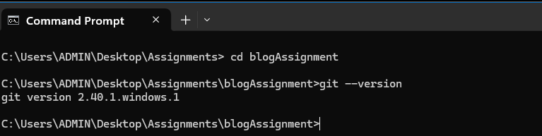
if you get an error like Command not found
or
'git' is not recognized as an internal or external command
it means Git is not installed yet.
brew install git
Alternatively, installing Xcode Command Line Tools also provides Git: Run:
xcode-select --install
sudo apt update
sudo apt install git
Once Installed, Verify by running
git --version
After Installing Git, the next thing you need to do is to tell Git who you are. This is used to label each commit/save/update you make to the project with you name and email address. It like signing your work. This step is important as it provides ownership and identity both locally and when uploading/pushing you work to remote platforms like GitHub.
git config --global user.name "Your Name"
afterwards run this command to confirm git config user.name
Here is how it looks like:
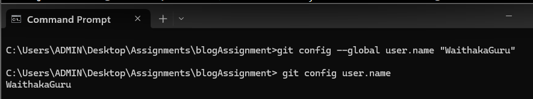
git config --global user.email "youremail@example.com
afterwards run git config user.email
to confirm
Here is how it looks like:
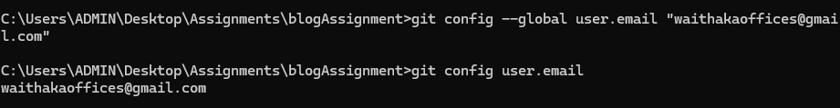
With Git installed and configured let's dive into repositories the core of how Git functions
A Git repository (or repo for short) is a storage space where Git tracks and manages all the changes to your project’s files. Think of it as a digital ledger that records the history of your project, allowing you to view, revert, or branch off into different versions at any point. Let's see how we can create a Git repository:
Run the mkdir folder-name command to
create a new folder (replace folder-name with the actual name of your
folder) then run cd folder-name to
navigate to your folder
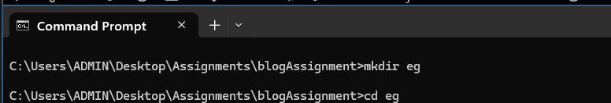
After navigating to your project folder, run:
git init
This command creates a hidden .git directory that Git uses to track
changes in this folder. Now, your project is officially a Git
repository:)
Something like this:
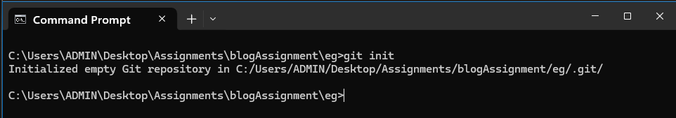
In Git, the staging area is an intermediate space where you can prepare changes before saving/uploading/committing them to the repository. Think of it as a rough draft space where you can review and format your changes.
To add files to the staging area, use this command
(replace 'file-name' with actual name of your folder)
git add file-name
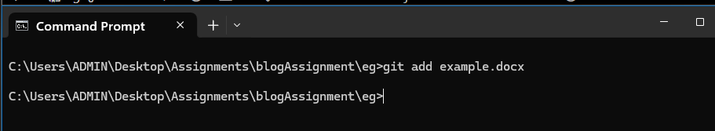
To add multiple files to the Staging area:git add file-1-name file-2-name file-3-namegit add .
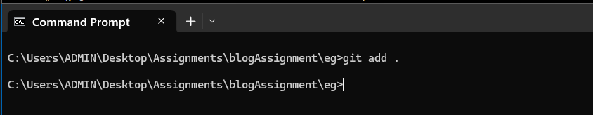
A commit in Git is a snapshot of your project's current state. It records changes to the repository and includes a commit message describing the changes.
Good commit messages are crucial for understanding the history of your project. The commit messages should be a continuation of the statement "This commit is going to". In summary:
git commit -m "commit-message" to commit
your changes with the relevant commit message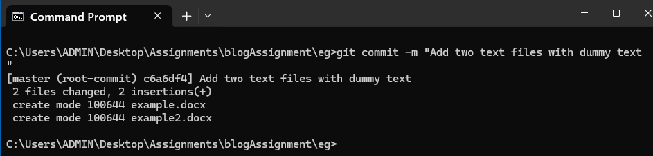
git commit to open a text editor and
write a more descriptive commit message if need be.
To view the commit history: run git log
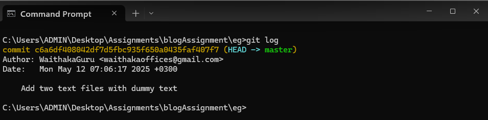
To revert your repository to a previous commit: use
git revert 'commit-id'
This command creates a new commit that undoes the changes made in the
specified commit.
A branch in Git is a separate line of development. It allows you to work on different features or fixes independently without affecting the main codebase.
To create a new branch, Run:
git branch new-branch-name(replace 'new-branch-name' with the actual name of the branch)
For example:
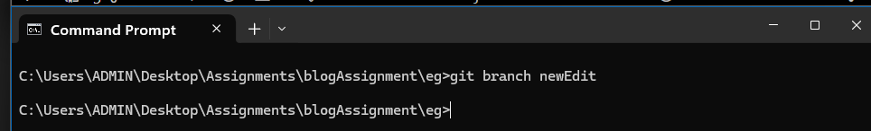
git checkout -b new-branch-name
or
git switch -c new-branch-name
To list all branches in you repository: Run
git branch
For Example:
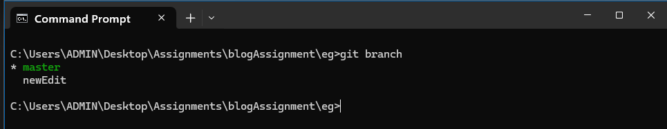
The current active branch is indicated with an asterisk (*)To switch to another branch:
Run:git switch branch-name (replace
'branch-name' with the actual name of the branch)
or
Run:
git checkout branch-name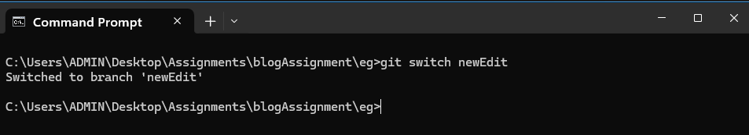
To merge changes from one branch into the current branch:
Run: git merge branch-name (replace
'branch-name' with the actual name of the branch)
Ensure you're on the branch you want to merge into (for example, main)
before running the merge command.
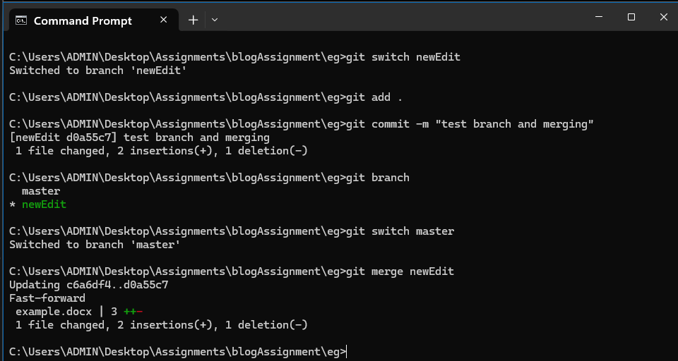
To delete a local branch:
Run:
git branch -d branch-name
If the branch hasn't been merged and you still want to delete it:
Run:
git branch -D branch-name
Here is how it looks like:
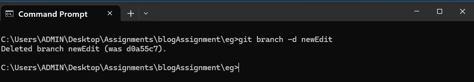
Well Done!🫡 By now, you’ve gone through the essential Git basics—setting up Git, creating a repository, making commits, working with branches, and more. That’s a solid foundation! But Git is a powerful tool with even more to explore. Here are some recommendations:
Git works locally, but GitHub is where the magic of collaboration happens. Here’s what you’ll learn next:
Understanding remote repositories is crucial for teamwork. Next topics:
for example: git stash, git rebase, git cherry-pick, git reflog and recovering lost commits
The best way to solidify your Git knowledge is through practice. Try: Starting a personal project on GitHub Contributing to open-source repositories Pair programming or collaborating with a friend